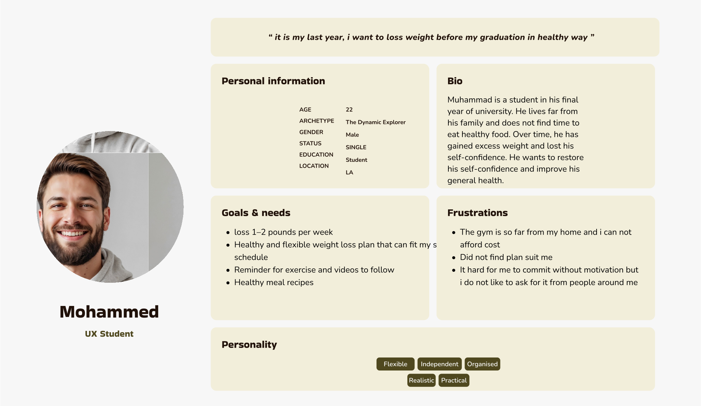
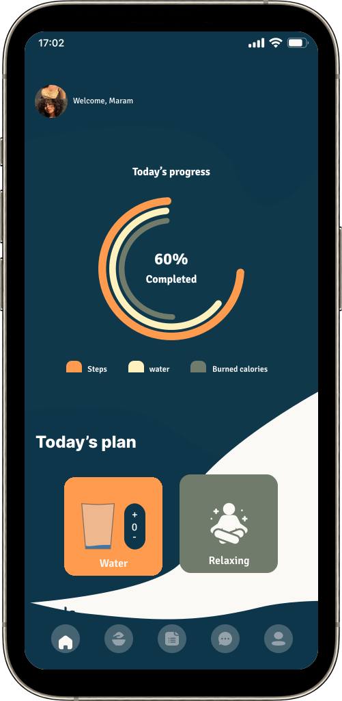
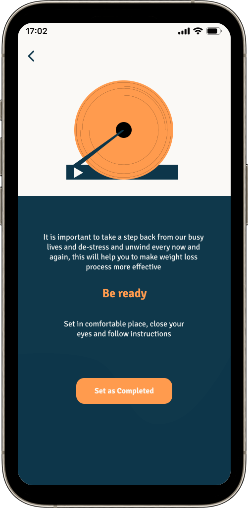
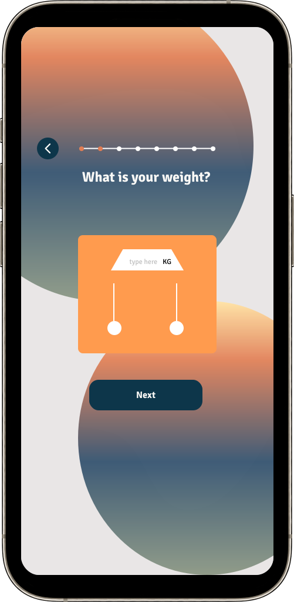
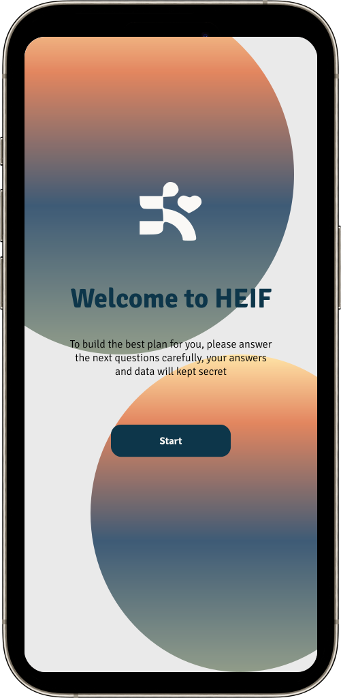
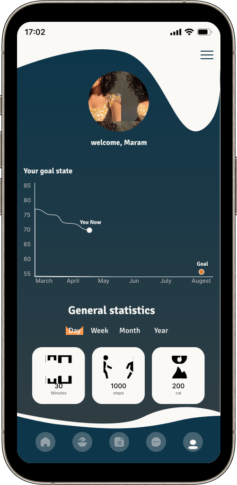

Callenge
The Daily Health Conference is a non-profit organization dedicated to promoting health and wellness through impactful public talks, participatory workshops, and professional training all over the world. The Daily Health Conference offers an online membership on their website. Even though The Daily Health Conference has numerous years of experience in the field, its program has been slow to catch up with technology. They have seen a substantial drop in memberships. Now the Daily Health Conference wants to find a way to offer more value to its members.
- 2 Weeks
- UI/ UX
- IronHack Challeng
User Reaserch
This journey began with thorough research and investigation into the problem at hand. As a first step, we analyzed competitors in terms of their brand, features, and positioning on the market. Based on this analysis, we identified the ideal position in the market.
Moving on from the initial step and aiming to understand users and their needs, we conducted a survey that was answered by over 100 individuals in total. Fifty respondents identified the lack of suitable information for healthy weight loss as their biggest challenge, while sixty individuals found it difficult to sustain their weight loss journey.
Based on their answers, we conducted interviews with five individuals to delve deeper into the reasons behind the survey results. We recorded the interviews and, with the assistance of affinity diagrams, identified the most recurring themes. We discovered that users struggle with navigating through the vast amount of weight loss-related information, which leaves them feeling lost and unable to commit to a specific plan, ultimately leading to a loss of motivation and the inability to sustain their efforts.
Pain points
- Difficulty accessing appropriate information.
- Difficulty staying committed to a plan.
- Lack of motivation.
User Persona
Based on the users' needs, let us introduce Mohammed. Mohammed is a final-year undergraduate student who lives away from his family and heavily relies on fast food for his meals, resulting in weight gain. He wants to lose weight and regain his confidence.

Problem statment
people who want to loss weight and get board easily need to find an integrated and personalized plan that suits them and keep them motivated because they want to reach their ideal weight
MVP
Using the MoSCoW method, we have determined the main value proposition, which is as follows:
The goal of the application is to help anyone who wants to lose weight in a healthy, flexible way that is appropriate for his goals by creating an appropriate plan for him consisting of exercises and meals, monitor the user’s performance while he follows the plan, motivate him, and provide healthy alternatives to exercises and meals.t
User Interface
After completing the user research phase and testing low-fidelity and medium-fidelity designs, we moved on to the user interface (UI) department. As a first step, we conducted a visual comparison among competitors which are: NOOM, WW and Un. The goal was to learn from their information presentation methods and also to build a new and distinct identity from what has been done before.
Brand Attributes & MoodBoard
Throughout this process, I endeavor to imbue the app with a captivating sense of warmth and enthusiasm, while also evoking the timeless charm of classic cinema. By carefully considering color palettes, typography choices, visual elements, and overall aesthetics, I aim to create an interface that exudes a delightful and inviting atmosphere for users.

Style Guide
Depending on what i chose as brand attributes, i selected colors, typegorphy and other UI elements. For colors, i chose orange and light yellow to represent enthusiasm and warmth, black and wight for classic vibe. for typography i chose Gold Man, it known to used in designing drama and movie posters.





